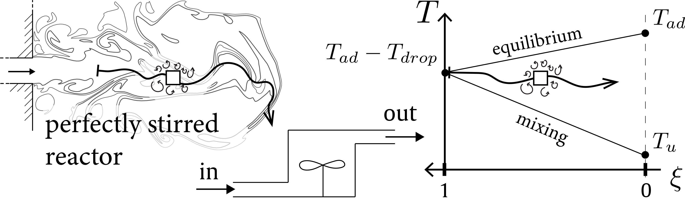

Data-driven modeling of subfilter-scale features in Large Eddy Simulation (LES) of hydrogen-air reacting flows
Code for training and inference of a Convolutional Neural Network (CNN) to approximate filtered burning rates of lean premixed hydrogen-air flames [1]. Available via GitLab here.
[1] Hydrogen reaction rate modeling based on convolutional neural network for large eddy simulation. Quentin Malé, Corentin J. Lapeyre and Nicolas Noiray. Data-Centric Engineering, 2025. 10.1017/dce.2025.1

Diagram of the strategy used to train the CNN. More details in this journal publication.
Electron Energy Distribution Function (EEDF) solver for plasma kinetics
Quentin is currently working on the implementation of a EEDF solver into Cantera following Refs [1,2].
- enhancement proposal
- github work-in-progress branch
[1] Gerjan Hagelaar et al. "Solving the Boltzmann equation to obtain electron transport coefficients and rate coefficients for fluid models", Plasma Sources Science and Technology, 10.1088/0963-0252/14/4/011
[2] Lionel Cheng et al. "Plasma assisted combustion of methane-air mixtures: Validation and reduction", Combustion and Flame, 10.1016/j.combustflame.2022.111990
Zero-dimensional Plasma Assisted Combustion (PAC) models
Python scripts to compute zero-dimensional constant volume reactors using models for Plasma Assisted Combustion (PAC). Scripts rely on Cantera for the computation of the thermochemistry. Models are based on the work of Maria Castela et al. [1] and Nicolas Barleon [2].
[1] Maria Castela et al. "Modelling the impact of non-equilibrium discharges on reactive mixtures for simulations of plasma-assisted ignition in turbulent flows", Combustion and Flame, 10.1016/j.combustflame.2016.01.009
[2] Nicolas Barleon "Detailed modeling and simulations of Nanosecond Repetitively Pulsed Discharges for Plasma-Assisted Combustion (PAC)", PhD Thesis, Universite de Toulouse, s214685
Multi-zone pre-chamber ignition engine model with ignition predicion
A zero-dimensional pre-chamber ignition engine model to assess the influence of geometric or operating point changes on engine operation at a low computational cost [1]. It incorporates a jet ignition submodel based on Direct Numerical Simulation (DNS) results [2] to track misfires. The code relies on Cantera for the computation of the thermochemistry.

Sketch of the Pre-chamber Engine Model with Ignition Prediction (PEMIP) multi-zone engine model for pre-chamber engines.
[1] Quentin Malé et al. "Jet ignition prediction in a zero-dimensional pre-chamber engine model", International Journal of Engine Research, 10.1177/14680874211015002
[2] Quentin Malé et al. "Direct numerical simulations and models for hot burnt gases jet ignition", Combustion and Flame, 10.1016/j.combustflame.2020.09.017
Zero-dimensional turbulent jet ignition model
A zero-dimensional jet ignition model to predict the ignition outcome (success or failure) of fresh gases by a jet of hot burnt gases. This model has been derived for pre-chamber ignition engines but can be used for other applications including flameproof enclosures. The configuration is a generic case where a ducted jet of hot burnt gases enters a quiescent atmosphere filled with a premixed charge. The model views the ignition process as the evolution of an open well-stirred reactor convected into the atmosphere, where fresh gases and hot products mix at a certain rate and ignite or not. The code relies on Cantera for the computation of the thermochemistry.

Sketch of the Convected Open Reactor (COR) model to predict the outcome of the ignition of an atmosphere by a jet of hot burnt gases.
[1] Quentin Malé et al. "Direct numerical simulations and models for hot burnt gases jet ignition", Combustion and Flame, 10.1016/j.combustflame.2020.09.017